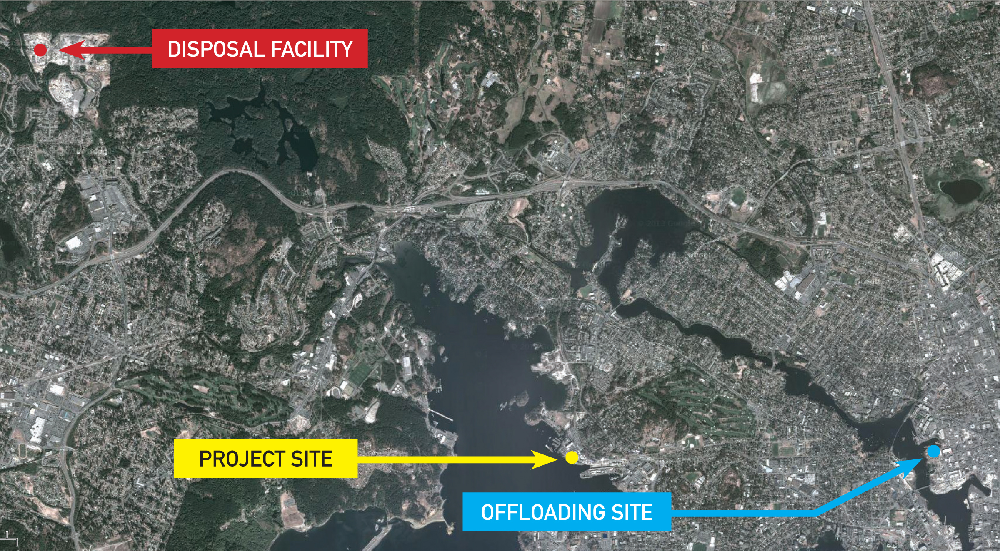

Plan d'eau de la cale sèche d'Esquimalt - Projet d'assainissement des sédiments
Contexte
Dans le cadre du Plan d'action pour les sites contaminés fédéraux, Travaux publics et Services gouvernementaux Canada (TPSGC) assainit (nettoie) les sédiments contaminés qui se trouvent dans le plan d'eau de la cale sèche d'Esquimalt (CSE) pour faire en sorte que la CSE réponde aux normes environnementales provinciales et fédérales. L'exécution de ces travaux permettra d'améliorer l'habitat marin du port d'Esquimalt.
La CSE est située sur la rive nord de l'anse Constance dans le port d'Esquimalt, au 825 Admirals Road dans le canton d'Esquimalt, en Colombie-Britannique. TPSGC en est le gardien fédéral et veille à l'exploitation ainsi qu'à l'entretien de ses installations. La CSE est utilisée pour la réparation et l'entretien des navires militaires et civils depuis 1927. Ces longs antécédents d'utilisation industrielle ont contribué à la contamination des sédiments se trouvant sur le plancher océanique entourant l'installation. Les principaux contaminants préoccupants déterminés au moyen des études détaillées du site comprennent des métaux (p. ex. arsenic, cuivre, plomb et zinc), des diphényles polychlorés (BPC) et des hydrocarbures aromatiques polycycliques (HAP). Il y a également des ions sodium et des ions chlorure (sel) provenant de l'eau de mer ainsi que des quantités moindres d'autres contaminants. Compte tenu des concentrations des contaminants, la classification des déchets aux fins d'élimination est celle de « terres industrielles+ » (concentrations supérieures aux normes d'utilisation des terres industrielles de la Contaminated Sites Regulation de la Colombie-Britannique). Cependant, environ la moitié des matériaux pourraient être utilisés sur des terres industrielles s'il n'y avait pas de sel. Aucune concentration de déchets dangereux n'a été détectée. Les sédiments peuvent être éliminés à une installation autorisée à accepter les sols considérés comme des déchets.
Pour obtenir de plus amples renseignements, veuillez consulter le rapport d'étude détaillée du site de la cale sèche d'Esquimalt de TPSGC (Golder Associates, 7 juin 2013) à la bibliothèque municipale Juan de Fuca.

Projet
Le projet comprend trois étapes : la construction d'un rideau de palplanches pour la protection contre l'érosion autour de la jetée sud, terminée en avril 2013; le dragage des sédiments contaminés du plan d'eau et l'élimination de ceux-ci dans des sites d'enfouissement homologués, ce qui commencera en juin 2013; et la création d'un nouvel habitat de marais intertidal pour les poissons dans le port d'Esquimalt, prévue pour juillet 2013.
L'étape de dragage vise l'extraction d'environ 150 000 mètres cubes de sédiments contaminés du plan d'eau de la CSE. Ce marché a été octroyé à Tervita Corporation en janvier 2013.
Les matériaux extraits seront transportés dans des barges, de la CSE à une installation de déchargement. Tervita prévoit livrer les matériaux à une installation privée située au port de Victoria, à côté de la rue David. Les sédiments contaminés seront chargés directement dans des camions et transportés jusqu'au site d'enfouissement Highwest de Tervita dans le district des Hautes-Terres, en Colombie-Britannique.
Un programme de surveillance environnementale vérifiera l'efficacité des mesures de protection du projet, pendant et après l'assainissement.
Répercussions du projet
Les activités de dragage se dérouleront de juin 2013 à mars 2014, six jours par semaine (du lundi au samedi). Le projet tiendra compte des effets potentiels du bruit sur le voisinage. Les heures de travail seront semblables à celles des opérations courantes de la CSE et le niveau du bruit respectera le règlement sur le bruit du canton d'Esquimalt.
Le trafic maritime accru, ce qui comprend les barges, sera coordonné par le ministère de la Défense nationale et le capitaine de port de Sa Majesté afin de minimiser les inconvénients causés aux plaisanciers du port d'Esquimalt.
Il pourrait y avoir une circulation accrue de camions à Victoria, Langford et dans les Hautes-Terres. Leur itinéraire sera planifié de sorte à minimiser les répercussions sur la circulation
Renseignements
Pour en savoir plus sur le projet, communiquez avec la ligne d'information sur le projet au 250-363-0227.
Travaux actuels :
- En date du 14 juin 2013, on prévoit du dragage à la cale sèche d'Esquimalt à partir du 17 juin 2013 dans le cadre des travaux prévus.
- L'entrepreneur envisage d'utiliser une drague à benne preneuse maritime pour procéder à l'excavation des sédiments, et les placer dans des barges étanches à matériaux. Chaque fois qu'une barge sera pleine, elle sera remorquée jusqu'à une barge de traitement des eaux sur le site aux fins de déshydratation des sédiments.
- Après la déshydratation des sédiments, les barges à matériaux devraient être remorquées au port de Victoria, jusqu'à une installation privée de déchargement à côté de la rue David. L'horaire actuel prévoit que la première barge arrivera à l'installation de déchargement le 18 juin 2013.
- On prévoit que les barges à matériaux seront déchargées au moyen d'une excavatrice, et que les sédiments (maintenant considérés comme des sols) seront placés dans des camions étanches aux fins de transport jusqu'au site d'enfouissement Highwest de Tervita, situé dans le district de Highlands, en Colombie-Britannique. Le camionnage devrait débuter le 18 juin 2013.
Résumé
Travaux publics et Services gouvernementaux Canada (TPSGC) a chargé un expert-conseil indépendant de faire une Étude détaillée de site (ÉDS) pour les besoins de l'établissement du Projet d'assainissement du plan d'eau de la cale sèche d'Esquimalt (CSE). Les principales constatations sont résumées ci-dessous. On trouvera le rapport complet à la Bibliothèque publique Juan de Fuca.
Description du site et contexte
La CSE, le plus important complexe de chantier naval et d'installation de réparation en eaux profondes sur la côte du Pacifique du Canada, est exploitée depuis 1927 pour les besoins de l'entretien de navires privés, gouvernementaux et militaires. Les installations de la CSE sont situées sur la côte nord de la baie Constance, dans le port d'Esquimalt, à l'extrémité sud de l'île de Vancouver, dans une zone anciennement connue sous le nom de baie Skinner. La baie Constance et le port d'Esquimalt ont une longue histoire d'activités navales et industrielles remontant au milieu des années 1800. En 1921, TPSGC a commencé la construction de la cale sèche dans la baie Skinner, un bassin rocheux naturel situé sur la côte nord de la baie Constance. La cale sèche a été formée en faisant exploser la roche mère et en en retirant les débris, ces derniers étant utilisés comme matériau de remblayage dans les zones limitrophes pour étendre le littoral.
La CSE est un bien de la Couronne fédérale administré par Travaux publics et Services gouvernementaux Canada. Le port d'Esquimalt est administré par le ministère de la Défense nationale (MDN) et régi par la Loi maritime du Canada, le Règlement sur les ports naturels et les ports aménagés de Transports Canada et les pratiques et procédures locales. L'administration portuaire relève du capitaine de port, Base des Forces canadiennes (BFC) Esquimalt.
Plusieurs études environnementales ont été effectuées depuis les années 1980 dans la zone du plan d'eau de la CSE et dans la zone plus générale du port d'Esquimalt pour évaluer l'ampleur de la contamination des sédiments. Les données chimiques recueillies dans le cadre des enquêtes antérieures et récentes ont permis de mettre en évidence la présence des contaminants potentiellement préoccupants (CPP) suivants dans le plan d'eau de la CSE :
- Hydrocarbures pétroliers extractibles légers/lourds (HPE légers/HPE lourds) et hydrocarbures aromatiques polycycliques (HAP)
- BPC
- Métaux : principalement arsenic, cuivre, plomb, mercure et zinc
- Tributylétain (TBT)
- Méthylmercure
- Dioxines et furanes
- Pesticides organochlorés
Les CPP sont largement distribués dans le plan d'eau de la CSE; cependant, les concentrations chimiques sont généralement plus élevées dans les zones adjacentes aux infrastructures ou situées au dessous de celles ci (p. ex. cale sèche, jetée sud, plage Munroe Head et quai de débarquement nord) et près des lieux d'activités/exploitations industrielles passées et/ou actuelles.
Une Évaluation quantitative détaillée des risques (EQDR) a permis de déterminer que les métaux, les HAP, les TBT et les biphényles polychlorés (BPC) représentent la plus grande partie des risques liés aux sédiments contaminés. Plus précisément, l'EQDR notait que :
- le cuivre, l'ensemble des HAP et l'ensemble des BPC sont en corrélation avec la plupart des paramètres de toxicité;
- la bioamplification des TBT, du méthylmercure et des BPC dans les organismes benthiques pourrait se traduire par un risque écologique potentiel;
- L'arsenic, le cadmium, le cuivre, le méthylmercure, les TBT, les BPC et les dioxines et furanes pourraient constituer un risque pour les consommateurs humains de produits de la mer, notamment le crabe.
Il y a actuellement un Avis sur les pêches – Avis sur la consommation (FN0807) en vigueur pour le port d'Esquimalt (zone 19) daté du 19 octobre 2009, qui recommande de limiter la consommation du crabe dormeur, du tourteau rouge du Pacifique, des œufs d'oursin et du sébaste pêché dans le port d'Esquimalt par les pêcheurs sportifs et de subsistance, en raison de la présence de sédiments contaminés dans le port.
Aperçu des résultats de l'étude détaillée du site
La séquence stratigraphique du plan d'eau se décompose généralement comme suit : sédiments meubles (couche de limon organique noir et/ou de limon argileux gris, les deux contenant des quantités variables de débris anthropiques); limon argileux gris sus-jacent; argile limoneuse et argile (sédiments marins superficiels à texture fine); argile de Victoria sus-jacent (argile limoneuse avec un peu de sable et de gravier); till sus-jacent (mélange de sable, de limon, de gravier et d'argile, dense, à granulométrie uniforme); et roche-mère. Des sédiments à granulométrie plus épaisse (sédiments marins superficiels à granulométrie épaisse) sont également présents dans les zones longeant le quai de débarquement nord (QDN), l'embouchure de la cale sèche et la jetée sud.
La séquence stratigraphique typique du site a été établie sur la base des observations faites sur le terrain (diagraphies de carottage des sédiments et rapports de forage), de l'observation d'échantillons et des résultats des analyses en laboratoire géotechnique et des essais sur place.
Dans les zones longeant le QDN, l'embouchure de la cale sèche et le pourtour de la jetée sud, on a trouvé des sédiments à granulométrie plus épaisse (sédiments marins superficiels à granulométrie épaisse) et peut-être des matériaux de remblayage. Au dessous de la jetée sud, des accumulations plus épaisses de sédiments meubles ont été trouvées, ainsi que des matériaux de remblayage granulaire suspects.
Un degré de contamination supérieur aux objectifs numériques des mesures d'assainissement (OMA) a été généralement constaté dans les sédiments meubles superficiels s'étendant en partie jusqu'aux sédiments marins superficiels sous jacents dans les zones où des sédiments à granulométrie plus épaisse ou du remblayage suspect étaient présents. La contamination était généralement située dans la couche supérieure sédimentaire d'une épaisseur de 1 à 2 mètres, mais descendait plus profondément en certains endroits, en général là où des sédiments à granulométrie plus épaisse ou des matériaux de remblayage étaient présents (QDN, embouchure de la cale sèche, pourtour de la jetée sud et partie au-dessous de celle ci), et dans les zones situées immédiatement à coté ou au dessous des infrastructures où des activités industrielles intensives ont été menées.
C'est au dessous de la jetée sud que les concentrations de contaminants sont les plus élevées. La contamination dépassant les OMA numériques a été rencontrée jusqu'à une profondeur de 6,71 m au dessous de la ligne de boue (adlb). Dans cette zone, la contamination par les HAP était potentiellement liée à la présence de pieux de bois traités à la créosote. La présence d'autres contaminants, dépassant les quantités prévues par les lignes directrices applicables, au dessous de la jetée sud a été enregistrée jusqu'à une profondeur approximative de 5 mètres adlb (BPC) et de 6,5 mètres adlb (métaux). Des concentrations beaucoup plus fortes de pesticides organochlorés ont été mesurées dans les échantillons de sédiments recueillis au dessous de la partie de la jetée constituée de pieux de tuyaux d'acier, avec des dépassements allant jusqu'à 191 fois l'OMA numérique.
En outre, la campagne de plongée de 2011 au dessous de la jetée sud a permis de constater la présence de concentrations de déchets de HAP dangereux dans deux échantillons de sédiments analysés. En juillet 2012, d'autres échantillons de sédiments ont été prélevés au dessous de la jetée pour fins d'évaluation supplémentaire des concentrations potentielles de déchets dangereux de HAP dans les sédiments. Aucune concentration de déchets dangereux n'a été constatée dans ces échantillons, ce qui confirme que l'étendue du problème était limitée aux deux échantillons d'origine. Cette zone est actuellement confinée à l'intérieur d'un mur de protection anti-érosion en palplanches d'acier, et ne fait l'objet de travaux de remise en état à l'heure actuelle.
Dans les zones ouvertes, plus naturelles, du plan d'eau, la contamination était normalement limitée aux sédiments superficiels (0,5 0,6 m adlb). Ces zones sont situées en outre à distance des infrastructures.
Les zones de concentration les plus élevées (>10 x OMA) sont généralement situées au dessous des infrastructures et/ou dans les parties adjacentes à celles ci. Tel qu'indiqué ci dessus, les concentrations de contaminants sont plus élevées au dessous de la jetée sud, ce qui n'est pas inattendu compte tenu du type d'utilisation dont cette zone a fait l'objet dans le passé et des informations dont on dispose sur la façon dont on avait coutume d'éliminer et de brûler les déchets.
Le degré général de contamination dans le reste de la zone visée par le projet est généralement semblable à ce qu'on observe dans le reste de la partie centrale de la baie Constance (soit une fourchette de 2 à 5 fois environ les OMA numériques).
 Contamination niveaux panneau d'affichage
Contamination niveaux panneau d'affichage
Résumé des conclusions et recommandations
L' ÉDS a permis de produire des données sur la distribution des contaminants dans la zone visée par le projet pour appuyer l'élaboration du plan de dragage correctif prévu par le Plan d'assainissement du plan d'eau de la CSE, qui comporte l'enlèvement matériel à grande échelle des sédiments contaminés dépassant les OMA numériques.
En raison de la présence d'infrastructures à l'intérieur de la zone visée et à proximité immédiate de celle ci, laquelle zone est sensible à l'érosion, et compte tenu de la profondeur de la contamination au dessous de la jetée sud et de certaines parties de la zone de la plage Munroe Head, il est entendu qu'un certain degré de contamination résiduelle figée subsistera après la remise en état. Cependant, le volume des matières contaminées laissées sur place sera généralement modeste comparé au volume retiré. Il est entendu que TPSGC a l'intention de faire une évaluation des risques environnementaux liés à la présence d'une contamination résiduelle figée pour les besoins de la gestion à long terme des matières concernées (si nécessaire). Pour les besoins de l'élaboration conceptuelle de la future remise en état des sédiments situés au dessous de la jetée sud, on recommande que des options soient étudiées concernant le retrait et l'isolement des matériaux contaminés ayant des concentrations dangereuses de déchets de HAP.
S'agissant de la contamination des sédiments par le TBT, la remise en état proposée réglera la question d'une grande partie de la contamination par les TBT dépassant le seuil de risque modéré applicable aux sédiments. D'après les calculs, la zone de couverture actuelle du projet se traduira par une importante réduction des concentrations générales de TBT dans la baie Constance. En d'autres termes, s'il est vrai que toutes les zones à risque modéré localisées (« points chauds ») seront traitées, la concentration pondérée moyenne de TBT dans la baie Constance devrait tomber au dessous du seuil de poids à sec de 0,75 µmu;g/g. En outre, on s'attend à ce que des améliorations, écologiquement substantielles sur le plan des concentrations moyennes de sédiments à plus petite échelle, pourraient se produire après le dragage.
Une bonne partie des BPC du plan d'eau de la CSE sont considérés comme des contaminants « hérités », c. à d. associés à des activités, processus et produits industriels passés (p. ex. additifs dans la peinture des coques de navire) qui ne sont plus pratiqués ou utilisés, et donc la recontamination de ces zones par ces contaminants est peu probable. Cela inclut le BPC, certains métaux lourds (arsenic, mercure, plomb), les TBT, le méthylmercure, les dioxines et furanes et les pesticides organochlorés.
Cependant, on s'attend à ce qu'il y ait un risque d'entrée continue de BPC dans le plan d'eau de la CSE, y compris les HAP (associés au traitement des pieux de bois), les hydrocarbures et les métaux (surtout le cuivre et le zinc), en rapport avec les opérations courantes de la CSE. Les TBT pourraient être également un CPP permanent, mais diminuant avec le temps vu que les peintures contenant des TBT ont été interdites au Canada.
TPSGC continue de surveiller les décharges d'exploitation et les décharges pluviales et de mettre en œuvre des projets visant à moderniser les infrastructures ou à gérer les pratiques de façon à améliorer encore davantage le contrôle des sources de pollution et les déversements potentiels dans l'environnement marin. TPSGC a mis en œuvre un Système de gestion de l'environnement (SGE), certifié ISO 14001, qui inclut des Pratiques de gestion exemplaire en matière d'environnement (PGEE) que tous les entrepreneurs qui exploitent l'installation sont tenus de respecter.
Les sédiments contaminés des autres parties du port pourraient constituer une source continue de contamination, mais l'ampleur de la recontamination à partir des ces sources sera probablement limitée au niveau de concentration actuellement présent au centre de la baie Constance (p. ex., de l'ordre de 2 à 5 fois les OMA numériques). En outre, une stratégie de gestion des risques à l'échelle de l'ensemble du port est actuellement élaborée par le MDN, dans le but d'améliorer à long terme la situation de la contamination dans le port d'Esquimalt, les zones littorales contrôlées par le MDN étant activement remises en état par l'intermédiaire de divers projets de construction proposés/prévus.
Questions et réponses
- Comment les travaux sont-ils financés?
-
Les travaux sont financés par l'intermédiaire du Plan d'action pour les sites contaminés fédéraux (PASCF), lequel a été établi en 2003 pour aider les ministères et organismes fédéraux à gérer les risques liés aux sites fédéraux contaminés, en particulier ceux qui posent le plus grand risque pour la santé humaine et l'environnement.
- Quel est le but du projet?
-
Le but du projet est de retirer les sédiments contaminés du plan d'eau de la cale sèche et des zones immédiatement adjacentes.
- Pourquoi?
-
Le nettoyage du plan d'eau est une importante priorité pour TPSGC en raison des niveaux de contamination présents et du risque de voir les sédiments contaminés se déplacer vers d'autres parties du port.
Selon le Système national de classification des lieux contaminés du Conseil canadien des ministres de l'Environnement, le plan d'eau entre dans la catégorie « Classe 1 – Priorité d'intervention élevée ».
Ce projet a été lancé dans le cadre du Plan d'action pour les sites contaminés fédéraux pour exercer la diligence raisonnable prévue en matière d'environnement et réduire les responsabilités et les risques.
- Quels contaminants sont présents?
-
Les principaux contaminants préoccupants sont des métaux (arsenic, cuivre, plomb et zinc), les biphényles polychlorés (BPC) et les hydrocarbures aromatiques polycycliques (HAP).
- Des déchets dangereux sont-ils présents?
-
Aucun déchet dangereux n'a été identifié dans le plan d'eau qui sera dragué. Une quantité limitée de contamination par des déchets dangereux a été constatée dans la zone qui sera isolée à l'intérieur d’un mur de palplanches en acier en cours de construction. Ces mesures d'endiguement permettront de remettre à plus tard cette partie de la remise en état.
- D'où viennent les contaminants?
-
Les contaminants proviennent principalement d’activités industrielles menées dans le passé telles que la réparation et la construction de navires, à une époque où les pratiques n'étaient pas aussi soigneusement gérées qu'elles le sont aujourd'hui.
Les opérations actuelles produisent des résidus de cuivre et de zinc, et les procédures de gestion des sites ainsi que des pratiques environnementales améliorées ont été adoptées pour garantir que ces matières soient confinées et donc pour réduire ou éliminer pour l’avenir les sources potentielles de contaminations des sédiments du port.
- Que fait-on pour prévenir la contamination?
-
Toutes les opérations menées dans la cale sèche doivent être conformes à la législation et aux normes environnementales applicables. Pour réduire encore davantage les risques de répercussions environnementales des activités menées dans la cale sèche et mieux protéger l'environnement marin, des pratiques exemplaires en matière de gestion environnementale ont été adoptées. Ces pratiques sont prises très au sérieux et font l'objet d'évaluations régulières dans l'intention de les améliorer constamment, dans le cadre du Système de gestion de l'environnement (SGE) certifié ISO 14001. Les améliorations apportées à l'infrastructure du site contribuent également à réduire les effets sur l’environnement.
- En quoi consistera le nettoyage?
-
Le projet prévoit l'installation d'un mur de confinement de palplanches en acier autour de la jetée sud, ainsi que le dragage des sédiments contaminés dans le plan d'eau ouvert et leur élimination dans des sites d'enfouissement agréés.
- Quelle est la séquence des travaux du projet actuel?
-
Un mur de palplanches est en train d'être installé autour du périmètre de la jetée sud pour contenir les sédiments situés sous celle-ci. Après l'installation des palplanches, les eaux libres du plan d'eau seront draguées. Lorsque le dragage sera terminé, et une fois le nettoyage fini, une couche de sédiments propres (du sable) sera placée sur le fond marin. Une armature de roche sera ensuite placée sur les côtés au dessous du niveau de marée basse si nécessaire. Pendant les opérations de dragage, un nouvel habitat pour poisson sera construit en un lieu distinct dans le port d'Esquimalt.
- Quels types de travaux le projet actuel comprend il?
-
Les sédiments dragués seront placés dans des barges, l'eau sera drainée et les matières restantes seront transportées hors site pour élimination selon les règlements fédéraux et provinciaux applicables. Des échantillons seront prélevés après le dragage pour vérifier si le nettoyage a réussi.
- Quels travaux ont été effectués jusqu'à présent?
-
En septembre, TPSGC a adjugé à Salish Sea Joint Venture un marché de 6,5 millions de dollars visant la construction du mur de palplanches. Les travaux ont commencé en octobre 2012 et ont pris fin en avril 2013.
Pour la deuxième partie du projet, TPSGC a maintenant adjugé un marché de 38,6 millions de dollars à Tervita Corporation, à charge de retirer les sédiments contaminés du plan d'eau et de les transporter jusqu'à des sites d'enfouissement agréés. Le dragage commencera en juin 2013 et devrait prendre fin au printemps 2014.
Le contrat de remise en état des eaux libres inclut la démolition et l'élimination de structures; le déplacement temporaire de structures et leur réinstallation; le dragage par barge et le retrait d'environ 150 000 mètres cubes de sédiments contaminés et de débris connexes; le transport terrestre et l'élimination des sédiments contaminés dans des installations d'élimination canadienne agréées; et le placement d'une couche de sable propre et d'une armature de roches sur certaines parties du fond marin du plan d'eau.
- Est-ce que tous les sédiments contaminés seront retirés dans le cadre du projet?
-
Une petite partie des sédiments contaminés qui sont immédiatement adjacents à des infrastructures d'importance capitale ne peuvent être entièrement retirés sans compromettre l'intégrité structurelle de la cale sèche ou des quais. La contamination résiduelle limitée qui subsistera peut-être sera contrôlée dans le cadre du plan de gestion des risques à long terme du site de façon à ce qu'on atteigne un très haut degré de confiance que les risques aux personnes et à l'environnement soient gérés comme il convient.
- Quel est le risque de recontamination?
-
Dans l'ensemble, le projet se traduira par une réduction de masse nette importante des niveaux de contaminants dans le port. Il est possible qu'un certain degré de recontamination se produise en raison de la redistribution des sédiments des autres parties du port d'Esquimalt dans la zone visée par le projet. Des programmes environnementaux et des pratiques de gestion exemplaires de la cale sèche ont été adoptés pour minimiser ou éliminer le risque de recontamination par les activités courantes du chantier naval.
- Comment les limites de la zone à nettoyer ont-elles été établies?
-
La zone visée par le projet comprend le plan d'eau de la cale sèche géré par TPSGC et une zone qui s'étend de 30 à 50 mètres au delà de cette limite légale. Le but était d'inclure toutes les parties qui pouvaient contenir des sédiments contaminés à cause des opérations menées dans le passé dans la cale sèche.
- Y a t il des zones écologiquement sensibles qui pourraient être affectées par ce projet?
-
La cote écologique d'ensemble du plan d'eau est « faible ». Il y a du varech dans certaines sections, mais celles ci ne constituent qu'une petite partie du site. Les résultats de levés détaillés effectués pour détecter la présence d'espèces sensibles dans la zone visée par le projet ont été pris en considération dans l'élaboration de ce dernier.
- Quel type d'habitat sera touché et comment ce risque sera t il atténué?
-
L'habitat du varech est présent dans la zone de la plage Munroe Head entre les marques de haute et de basse marées, là où des excavations correctrices sont proposées. Les palplanches autour de la jetée sud causeront à cet endroit une détérioration temporaire de la qualité de l'habitat, qui sera compensée par des projets d'amélioration de l'habitat menés en application des exigences de Pêches et Océans Canada.
- Les travaux de nettoyage vont-ils faire beaucoup de bruit?
-
Les travaux à la cale sèche devraient être conformes à l'ordonnance (no 2677) de la municipalité d'Esquimalt sur le contrôle du bruit.
- Quelles seront les heures de travail?
-
Les opérations de dragage devraient être menées pendant les heures de travail normales, et si nécessaire en dehors des heures de travail normales dans la mesure où cela est compatible avec l'ordonnance sur le contrôle du bruit.
- Quelles autorisations sont requises?
-
Les principales autorisations requises pour le projet sont les suivantes :
- Loi canadienne sur l'évaluation environnementale : examen préalable
- Loi sur les pêches : paragraphe 35(2);
- Loi sur la protection des eaux navigables : travaux dans les eaux navigables.
- Quel est le calendrier des travaux de nettoyage?
-
Conformément à l'autorisation reçue aux termes de la Loi sur les pêches, il n'y aura pas de travaux dans la partie aquatique du 1er avril au 31 mai, à l'exception de l'installation des palplanches et des défenses en bois de la jetée sud, qui peut être effectuée dans l'eau pendant cette période. Tous les travaux effectués dans l'eau en dehors de la période normale prescrite par la législation sur les pêches seront supervisés d'un spécialiste de l'environnement agréé.
La première partie des travaux a consisté en l'installation du mur de protection contre l'érosion en palplanches autour de la jetée sud, qui a commencé en octobre 2012 et a pris fin en avril 2013. Le dragage et les travaux connexes se dérouleront de juin 2013 à mars 2014, et la dernière partie du projet, soit la construction du nouvel habitat de poisson, devrait être réalisée de juillet à septembre 2013.
- Que se passera t il à la fin du projet? Qui le contrôlera et pendant combien de temps?
-
Le contrôle à long terme commencera dès la fin des travaux de nettoyage, pour garantir que les conditions du site restent stables et pour s'assurer qu'il n'y a pas de recontamination. Des échantillons de sédiments seront prélevés par TPSGC pendant au moins cinq ans, après quoi les résultats seront examinés et les exigences de contrôle à plus long terme réévaluées.
- En quoi ce travail va-t-il changer les choses?
-
Les avantages du projet sont notamment les suivants :
- amélioration des conditions des sédiments et des organismes qui vivent dans les sédiments grâce au retrait des contaminants, ce qui améliore la santé et la productivité des communautés;
- réduction de la masse d'ensemble des contaminants, se traduisant par une réduction à long terme des concentrations de contaminants dans l'ensemble du port;
- réduction du risque de migration des contaminants de la zone visée par le projet vers des zones externes; réduction du risque écologique et du risque pour les consommateurs humains de produits de la mer. Cependant, les autres sources de contamination dans le port pourraient continuer d’exiger l'émission d'avertissements sur la consommation du poisson et des mollusques.
- Quel effet le projet aura t il sur les concentrations dans les poissons et les mollusques?
-
Le projet de nettoyage des sédiments vise à régler le problème de la contamination de la zone visée, contamination dont on a déterminé qu'elle constitue un risque potentiel pour l'environnement ou pour les consommateurs humains de produits de la mer. Le nettoyage des sédiments contaminés vise à réduire ou à éliminer les risques inacceptables pour l'environnement et la santé humaine dans la zone visée.
- Quel rapport le projet a t il avec le plan d'ensemble visant le port?
-
Le projet concerne la contamination résultant des activités de réparation des navires menées dans le passé en rapport avec l'exploitation de la cale sèche dans le plan d'eau administré par TPSGC et dans les zones de contamination immédiatement adjacentes. Le MDN administre le reste du port d'Esquimalt.
- Pourquoi certaines parties du contrat sont elles réservées aux entreprises autochtones?
-
Offrir des ouvertures aux entreprises autochtones est une priorité pour le gouvernement du Canada, tel qu'indiqué dans la stratégie d'approvisionnement du gouvernement du Canada auprès des entreprises autochtones annoncée le 27 mars 1996.